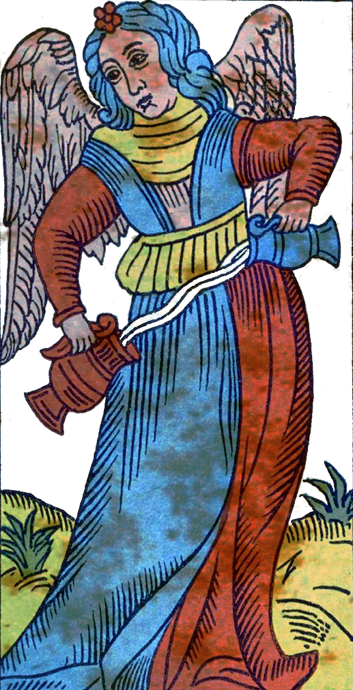
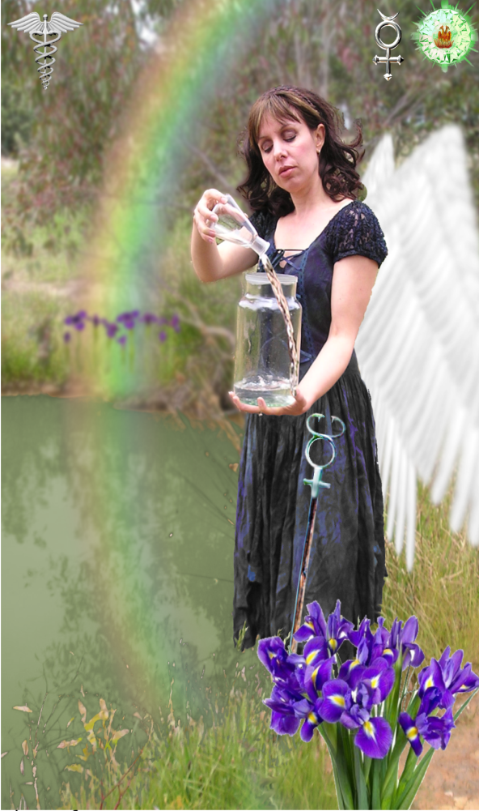
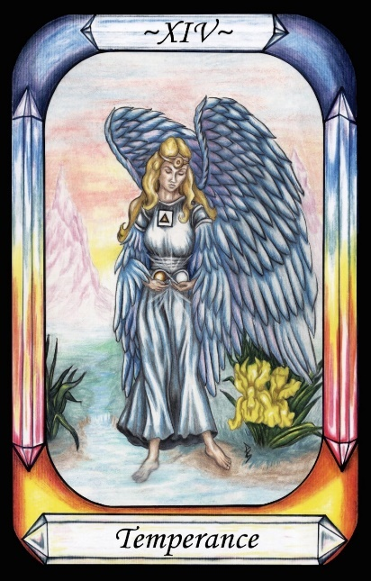
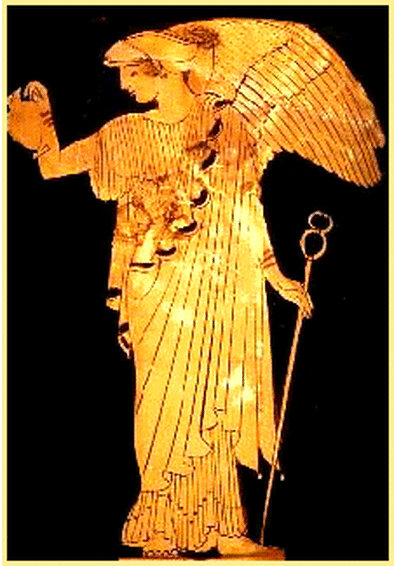
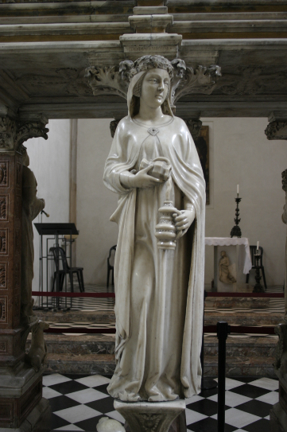

Temperance



The number of Temperance (14) has been swapped with Death (13).
Representation |
Goddess Iris, messenger, punisher of perjurers, fetcher of the Water of the river Styx, and according to Plato, to be found with Justice in heaven. |
Meaning |
The middle path, between the extremes |
Opposite card |
The Chariot, where the mind must constantly struggle to control its dark horse. |
Function |
Temperance is the Goddess Iris, a messenger between gods, who represents the heavenly alternative to the problematic Chariot.
[P62] To Mercury, lies and schemes of Evil. [Temperance, Iris] (Hod)
RWS Imagery
An angel, bearing a headband of the Sun, and an upwards triangle on the chest, pours Water between two vessels. Like the Star card, she has one foot in Water, and one upon land. Around the Water grow Iris plants and flowers. The writing on the chest of the angel reads as
Plato’s Chariot
Plato tells us that for the immortals, the life of the soul is filled with Justice and Temperance, for these allow true understanding. Temperance and Justice are therefore attributes of the state of grace, but are attained by mortals only after the dark horse has been tamed.
Temperance therefore represents the solution to the problem of the Chariot. It is achieved when the two horses of the soul work together, in harmony and cooperation.
More to the point for the Temperance card, paragraph 247e of Plato’s Phaedrus says
“The divine intelligence, being nurtured upon mind and pure knowledge, and the intelligence of every soul which is capable of receiving the food proper to it, rejoices at beholding reality, and once more gazing upon truth, is replenished and made glad, until the revolution of the worlds brings her round again to the same place. In the revolution she beholds Justice, and Temperance, and knowledge absolute, not in the form of generation or of relation”.
This clearly links Temperance to Plato’s Chariot, and in doing so confirms the link to Neoplatonism during the Renaissance, and to the Pymander.
Iris
Waite has added somewhat to the image of Temperance, adding Irises at the Water’s edge, an upward triangle of Fire, and a solar headband
This alludes to the Goddess Iris, who is known to punish perjurers by erasing their memory with waters of the Lethe. She is strongly in favour of both Justice and Temperance. According to Wikipedia,
“Iris is frequently mentioned as a divine messenger in Homer’s Iliad, She does not, however, appear in The Odyssey, where her role is instead filled by Hermes. Like Hermes, Iris carries a caduceus or winged staff. By command of Zeus, the king of the gods, she carries a ewer of Water from the River Styx, with which she puts to sleep all who perjure themselves.”
In other accounts, she fetches Water from the Styx when there is a dispute between gods. The gods drink the waters of the Styx, and any who perjure themselves are put to sleep for a year.
Also, some claim that the waters will permanently ease the mind of any mortal.
From these accounts, we can see the Strength of the role of Iris in both Justice and Temperance.
Plato says much of wings, including “The reason why the souls exhibit … exceeding eagerness to behold the plain of truth is that pasturage is found there, which is suitd to the highest part of the soul; and the wing on which the soul soars is nourished with this.”
It is clear that both Iris and Temperance bear angelic wings, and so combine well into the meaning of this card.
Pymander Interpretation
Given that Iris was replaced by Hermes in The Odyssey, it seems reasonable that the Temperance card be associated with Mercury, so as to fix its place in the Pymander.
This card is well camouflaged. The first main clue is RWS’ Iris lilies, indicating the Goddess Iris, who also bore a set of wings. The second clue is found in the text by Plato, describing his allegorical Chariot in his Phaedrus.
Like most of the Governors, the card is not a direct image of the primary Roman God, but rather of a similar or related myth, that represents the opposite.
Given that Iris was replaced by Hermes in the Odyssey, it seems reasonable for Temperance to be attributed to Mercury in the Pymander. Following this line of thought, it is a small step to see the charioteer as the mind within the soul, which in turn links to Mercury as the god of thought and intelligence, but also chaos and mischief.
Interpretation of RWS Imagery
The Pymander deck also replaces the angel wings of the Waite card with butterfly wings, which corresponds to one account of Iris’ mythology. It helps to make clear that she is Isis, as well as an Angel.
Discussion
Figure 18 shows a 13th century Italian statue of Temperance, which clearly shows a Water vessel.
It is said that Iris has the task of fetching a pitcher of Water from the River Styx. If a God is accused of perjuring themself, then they must swear an oath on the waters of the river Styx, which cannot be broken. Otherwise the God is put to sleep for a year. The Water at her feet is the Styx, and the vessels carry the Water that she takes from it.
According to Hesiod, Iris fetched Water from the Styx to for gods to swear an unbreakable oath upon.

Figure 19 - Iris,
Athenian red-figure lekythos C5th B.C.,
Rhode Island School of Design Museum
Note that in some images of Iris such as Figure 19 above, she carries a Kerykion staff, rather than a Caduceus, but both identify both her and Hermes as messengers.

Figure 20 - Detail of Peter of Verona's (13th century) grave
in the Cappella Portinari chapel in Sant'Eustorgio church in Milan, Italy:
allegorical statues of the Virtues. Temperantia (Temperance). Picture by Giovanni Dall'Orto